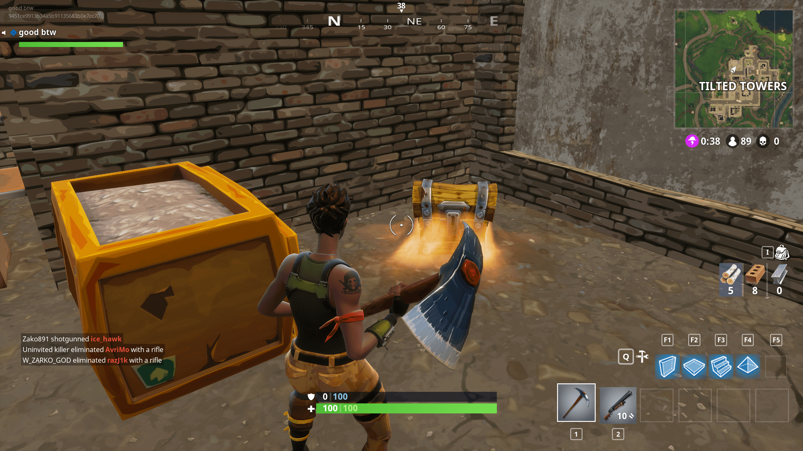
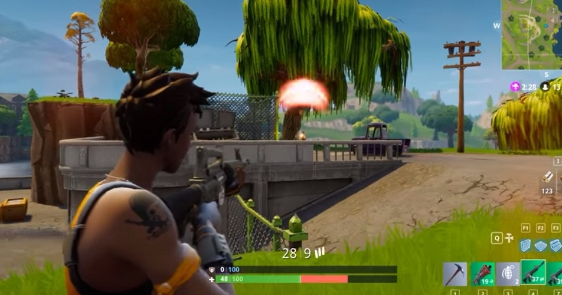
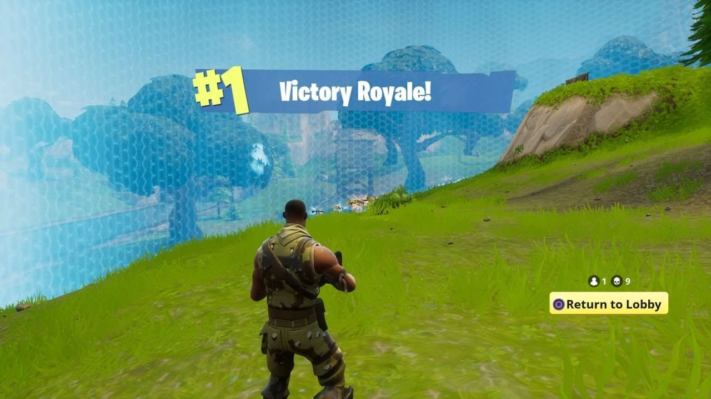

Fortnite Battle Royale is a 100-player PVP game, all players starting in one bus, jumping out into one giant map. Each player starts with nothing, but they find materials and weapons to build and to battle to the death. The last one standing wins. Available on PC, PS4 and XBOX1.
Fortnite is an easy game to play, and playing the game frequently helps players get an understanding of the game, and create different strategies. Here are the basic things you need to know about Fortnite Battle Royale.
In the beginning of a Fortnite Battle Royale game, players are put into one bus that flies over the map. Then, players are given a short amount of time to jump out of the bus and to land anywhere on the map.

When landing, players are then able to commence combat. Players first find weapons on the ground near buildings or in chests. They later grab materials to help them fight the first people they encounter.
As each player collects better and better loot, players must strategize and plan out offensive attacks, while avoiding the storm. The storm gets closer and closer and being in it brings your health down at a rapid rate. Along with chests and ammo crates, supply drops start to fall, as they carry very valuable items. All players at this point must be better equipped with weapons and heal-ables, as they try to keep themselves alive from both players and the storm.
At this point, very few players are alive. The storm has brought them to a small areas and players must try their best to win the game. The goal is to fight the very last people and to achieve the "Victory Royale."
Christian Canlas is the author of this webpage. He is 14 and goes to Victoria Park Collegiate.